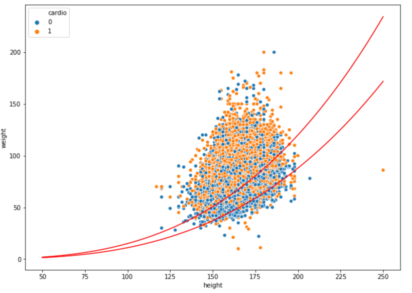

According to the World Health Organization, cardiovascular disease, such as ischemic heart disease and stroke, is the leading cause of deaths globally. “The world’s biggest killer is ischemic heart disease, responsible for 16% of the world’s total deaths” [1]. We hope people can pay more attention to their health and reduce the chances of getting heart disease. Therefore, it would be very meaningful if we can use features and some health conditions of a person to determine the signals and the probability of whether he/she has cardiovascular disease. Based on previous knowledge and what we have learned last quarter, we can achieve such a goal by implementing logistic regression and large-scale multiple testing methods on a dataset with ample information.
The dataset we use for this project is from Kaggle, called ‘Cardiovascular Disease dataset’ [2], which contains patients’ physical data collected at the moment of medical examination. The dataset has in total of 70,000 rows and 11 features, including patients’ age, height, weight, gender, systolic blood pressure, diastolic blood pressure, cholesterol, glucose, smoking, alcohol intake, physical activity, and a binary target variable of the presence or absence of cardiovascular disease. To be specific, among these features, age, height, weight, systolic blood pressure, and diastolic blood pressure are numerical variables, while the rest ones are categorical variables.
The dataset does not have any null value, or any data presented in strange format, so it’s already ready to use. The ‘cleaning’ process we actually did was conducting a few column transformations and added one column. The column transformation we performed was converting ‘age’ column (originally shown in days) into age groups from 30 to 65 years old, stepped by 5 year for the Exploratory Analysis, because having age in days makes it hard to . The column we added is called ‘ponderIndex’, which is ‘a measure of leanness of a person calculated as a relationship between mass and height’ [3], calculated by weight / height³. We create this column as we believe leanness is an important indicator of people’s health condition, which may be somewhat related to cardiovascular disease.
After data processing, we first conducted some exploratory analyses by simply making graphs.
The side-by-side bar chart above (Figure 3.1) shows the number of patients who actually has cardiovascular disease (orange bars) and the number of patients who do not have such disease (blue bars) in different age groups. We can see that for patients younger or equal to 55 years old, the majority of patients do not have such disease, but for patients elder than 55 years old, the number of patients who actually has cardiovascular disease is larger than the number of patients who do not have such disease. Hence, it indicates a positive correlation between age and cardiovascular disease that elder people are more likely to get such disease.
The side-by-side bar chart above (Figure 3.2.1) shows the number of patients who actually has cardiovascular disease (orange bars) and the number of patients who do not have such disease (blue bars) in different Ponderal Index level groups. We can see that for patients with a less than 16 PI index, the majority of patients do not have such disease, but for patients with higher PI index, the number of patients who actually has cardiovascular disease is larger than the number of patients who do not have such disease. At the same time, 11-15 is just the normal PI index range for healthy adults [4]. Such coincidence shows PI index is a good feature to predict whether a person has cardiovascular disease, especially for people with a PI index higher than the normal range (obese people).

Figure 3.2.2 shows the finding from another perspective. It’s a scatterplot of all 70,000 patients’ weights vs heights, where blue dots represent health patients and orange dots represent patients with cardiovascular disease. The red curves are PI index of 11 and 15, so the area bounded by these two red curves is the normal range. We can see that clearly there are more blue dots than orange dots in this area, while the situation is opposite in the rest of area.

The above bar plots (Figure 3.3) show the distributions of patients’ cholesterol, glucose, smoking, alcohol intake, and physical activity level. For cholesterol and glucose, value 1,2,3 mean normal, above normal, and well above normal; for smoking, alcohol intake, and physical activity, value 0,1 mean binary outcomes of do or not. The left plot is the distribution of patients who actually has cardiovascular disease while the plot at the right shows the distribution of patients who do not have such disease. Only one minor discovery is that for patients with cardiovascular disease, the proportion of patients with normal cholesterol level is much fewer than that from healthy patients, which means cholesterol may be related to the disease. Other analyzing methods need to be employed to closer examine the relationships between other variables and cardiovascular disease.

For visualization purpose, we also made a scatterplot of patients’ weights and heights (Figure 3.4), grouped by gender, where lighter pots are from females and darker pots are from males. The general pattern is quite normal that males are taller and heavier than females. However, what brings this plot to our attention is the exit of people with extremely low height and weight, given all the data is from adults, probably because we colored the data by gender. It’s not that plausible to have any adult with a weight of around 15kg or a height of around 50 cm. So, we suspect these are inaccurate data generated from mistakes while recording, and we plan to use empirical null distribution to find such outliers later.
Since the entire dataset have 12 features, we decided to first determine the combination of features we will use for the Regression model. By using the correlation function in python, we are able to find the correlation between ‘cardio’ which shows whether the person has the disease and the rest of the features as shown in Figure 4.1. Using a list of threshold of [0.002, 0.005, 0.01, 0.05, 0.1, 0.2], we have generated 6 combinations of features for testing. After applying the different combinations of features to the Regression model, we get the accuracy score for each combination. Our final selection is the combination with the highest accuracy score, and it contains features of ['age', 'cholesterol', 'weight', 'gluc', 'ap_lo', 'ap_hi', 'gender', 'alco', 'height', 'smoke', 'active'].
The goal of this particular analysis is to build a logistic regression model that predicts whether a person has Cardiovascular disease. We first select features for the model based on their correlations to the variable ‘cardio’ which indicates whether a person has Cardiovascular disease, and then we pick the set of features that produce the largest model accuracy score. Finally, the features that we use to make predictions are Age, Gender, Height, Weight, Blood Pressure, Cholesterol Level, Glucose Level, Alcohol Intake, Physical Activity and Smoking habit. The default detection threshold for the Logistic Regression model is set to 0.5.
When training the Logistic Regression model with training data and making predictions on the test data, we get an accuracy score of 0.7187, which means 71.87% of the people in the test data are predicted correctly on whether they have Cardiovascular disease. But we know that the accuracy score of 0.7187 isn’t so great for a prediction model, so we decide to variate the detection threshold of the model and find different the balance between Type I and Type II errors to gain better accuracy. This first model is also set to be the baseline model for the project.
In order to improve our baseline model, we generate a list of detection thresholds from 0.1 to 0.9 with a step of 0.01 for the model. While testing the model with different detection thresholds, we also record the True Positive, False Positive Rate, and False Discovery Rate for further analysis. The 45 degree line represents where the default threshold takes place.


During the detection threshold selection process, we have found that at the threshold of 0.48 (default is 0.5), the accuracy score is at its highest -- 0.7220, as shown in Figure 4.3.4. To prove the detection threshold of 0.48 is the optimal point, we have generated the three graphs above. In order for a threshold to be the optimal point, it must find balance between True Positive Rate, False Positive Rate, and False Discovery Rate. From figure 4.3.2 and figure 4.3.3, we can tell that the optimal point is somewhere around True Positive Rate of 0.7. When the detection threshold is 0.48, its True Positive Rate is 0.7037 which matches our observation. Therefore, we believe that the detection threshold of 0.48 is close to the optimal point we are looking for.
For the original dataset, we successfully removed 820 outliers out of the 70000 observations by applying the FDR and FPR method to find the upper and lower bound. Even though the Empirical Null method was not suitable to our dataset since p0 was estimated to be close to 1, we still got plenty of practice on how to apply it to data. Finally, our product was a Logistic Regression model that predicts whether a person has Cardiovascular disease with an accuracy score of .7220 on the test set.
When using p0 estimation to find the proportion of outlier in the dataset, we concluded that p0 is not significantly different from 1, which means our outlier detection strategy is not quite perfect; p0 of 1 means that we were not able to apply the entire Empirical Null method to find the outliers. We then had to use the FDR and FPR graph to subjectively determine the upper and lower bound for both female and male height in order to eliminate outliers. Therefore, our dataset is possibly not fully cleaned, which negatively affect the model accuracy.
For future improvement, we have to gain a much better understanding of the data collection process of this dataset so that we can have more context on how to figure out the outlier detection strategy. But on Kaggle, we were not able to find any contextual information. For example, if possible, we would like to find out on what region was data collected, which we will able to get information about how tall people in that region will be. Then we can detect outliers more accurately.
[1]: WTO, The top 10 causes of death, 9 December 2020, https://www.who.int/news-room/fact-sheets/detail/the-top-10-causes-of-death.
[2]: Svetlana Ulianova, Cardiovascular Disease dataset, https://www.kaggle.com/sulianova/cardiovascular-disease-dataset.
[3]: Wikipedia, Corpulence index, https://en.wikipedia.org/wiki/Corpulence_index
[4]: Hanna Pamuła, Ponderal Index Calculator, 23 October 2018, https://www.omnicalculator.com/health/ponderal-index.